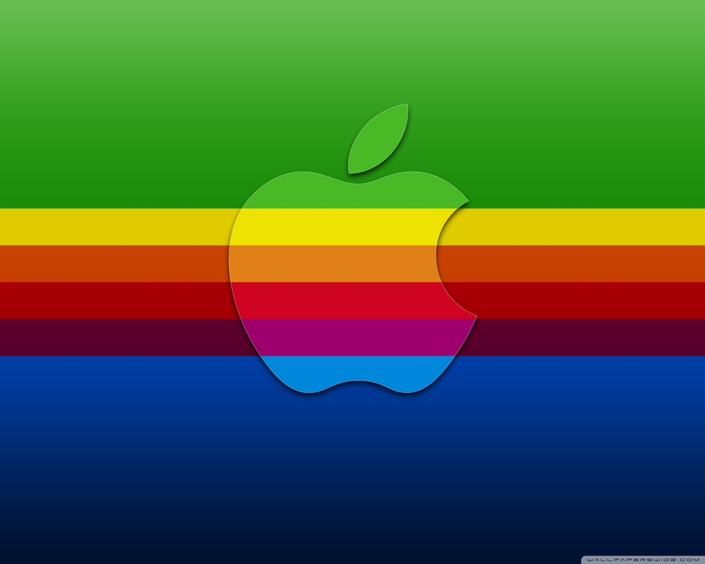

A brief history of the internet
The World wide Web
World wide Web by name the WEB, the leading information retrieval service of the internet.
The development of www was begun in 1989 by Tim Berners Lee and his colleagues at an international
scientific organization based in Geneva, Switzerland. It was made available for general release in
January 1992.
Examples of Web browsers;
Mosaic developed by Marc Anderseen and others in USA in 1993.
The software giant Microsoft Corporation became intrested in supporting internet Applicationson
on PCs and developed its own web browser Internet Explorer.
Apples Safari was released in 2003 as a default browser on Macintosh PCs and later on iPhones(2007)
and iPads(2010) the fisrt browser with privacy mode, private browsing.

The first challlenger to IEs dominance was Mozzila's Firefox, released in 2004 and designed to
address issues with speed and security that plagued IE.
In 2008 Goggle launched Chrome the first browser with isolated tabs. By 2013 chrome had become
the dominant browser. Chrome.
Microsoft discontinued IE and replaced it with Edge in 2015.
Developed IE and Edge
harry uses an apple product.
A tittle
Text editors and IDEs
Text editor is a type of computer programme that edits plain text.
They can be used to change files such as configuration files, documentation files
and programmming language source code.
Examples:
An IDEs, or Integrated Development Enviroments, enables programmmers to consolidate the
different aspects of writting a computer programme. they help in editing source code, building
executables and debugging.
Examples: